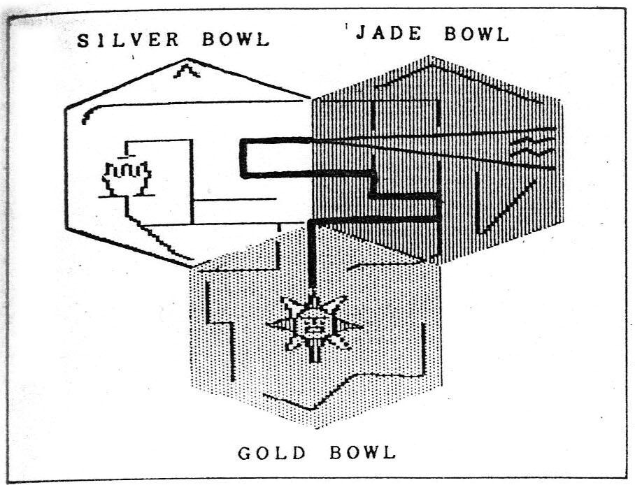
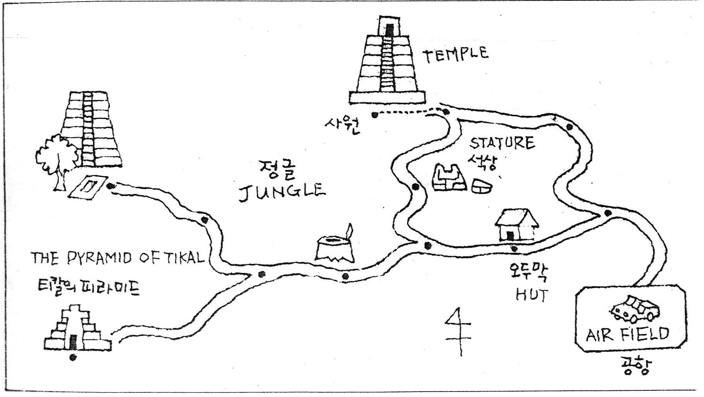
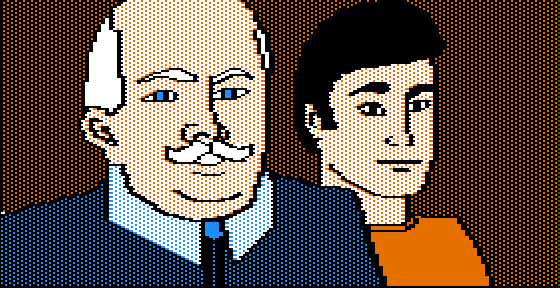
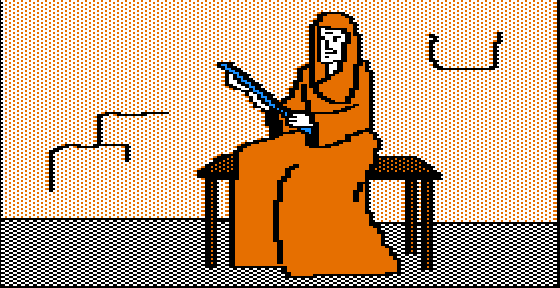
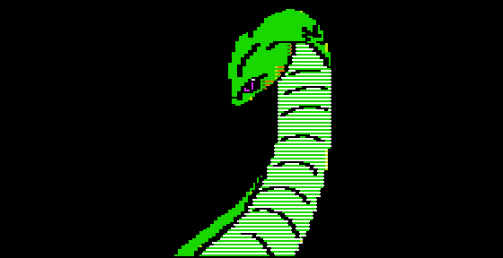
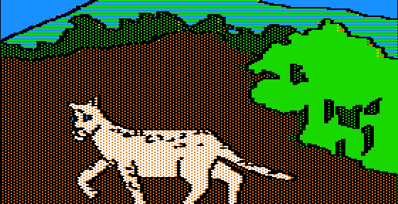
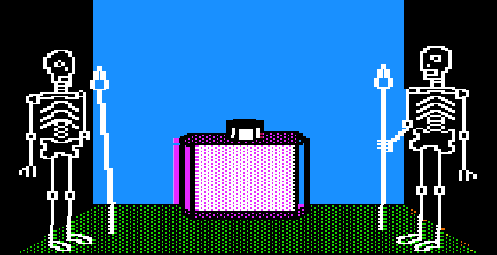
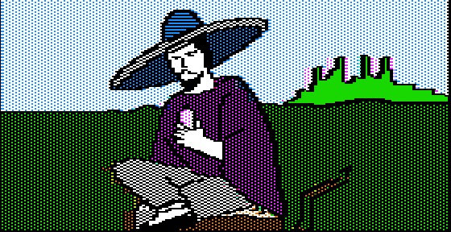
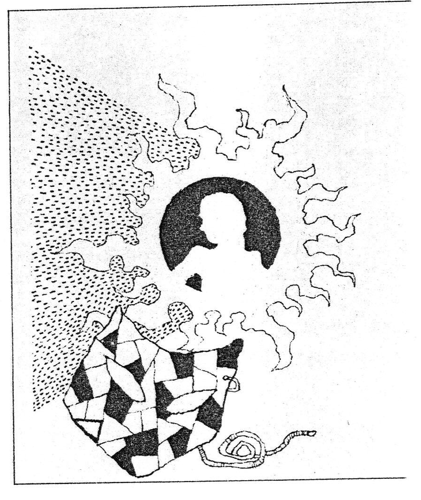

모험의 시작
고대 중앙아메리카에 「태양의 나라」가 있었다. 수도인 테노치티토란에는 거대한 피라미드나 태양의 신전이 줄지어 있었고, 인구는 30만 정도였다. 사람들은 수많은 인신어공(人身御供)을 신(태양)에게 바치는 여러 가지 주술의 제사를 지냈다. 이것이 아즈테크 제국이다. 그러나 「갈대해(一葦年)」에 스페인에게 공격받아 한순간에 그 문명은 영원히 수수께끼로 묻혀 버렸다.
게임 진행을 위한 「태양의 가면」 줄거리
이 「태양의 가면」 줄거리는 게임 진행 과정을 나타낸 것이다. 화면에 나오는 자막과 이 줄거리를 비교해 보면서 게임을 진행하면 쉽고 재미있게 게임을 즐길 수 있을 것이다.
나의 이름은 맥 스틸(MAC STEAL), 직업은 고고학자이며 모험가이자 보물수집가이다. 태양의 가면을 찾기 시작하게 된 것은 티벳에 있을 때였다. 내가 라사(티벳의 수도)의 수도원에서 발견한 족자를 동료인 프란시스코 로보프에게 도둑을 맞았다. 그래서 나도 그가 이전에 발굴하여 소유하고 있던 「부적」을 훔쳐 버렸다. 그 후 나는 보스톤 대학에 돌아가 새로운 발굴조사를 시작하고 로보프와의 관계를 청산하려고 결심을 했다. 세심한 조사 결과 부적은 전설과 민화 속의 중부 멕시코에서 만들어진 것으로 판명됐다. 로보프가 어떻게 해서 이것을 손에 쥐었는지 매우 호기심이 나 조사해 보니 전설상 흥미 있는 것과 연결되었다. 그것은 태양의 가면이었다. 나는 지금까지 가면에 대해서 수집한 정보를 정리해 보았다.
그것은 금으로 되어 있고 몸에 부착하면 부적이 되지만 지나치게 쓰면 자신의 파멸을 초래한다.
그러나 그것은 신화에 지나지 않는다. 부적에 매료당한 나는 그것에 담겨져 있는 것을 알려고 시도했다. 약간 깨진 곳을 조사할 때 너무나 작게 닫혀진 곳을 열어버리는 바람에 엷은 녹색 까스가 뿜어 나와 나는 의식을 잃었다. 의식이 돌아왔을 때 나는 대학병원의 병실에 누워 있었다. 나는 이틀간이나 의식을 잃고 있었다. 의사들은 원인불명의 병에 당황하여 치료를 못하고 있었다.
의사는 내가 발작을 일으켰을 때에 일시적으로 발작을 억제시키는 해독제를 조제했다. 의사는 그 약이 나의 생명을 유지시켜 주는 것이니 규칙대로 복용하라고 경고했다. 나는 정력적으로 부적을 조사하기 위해서 사무실로 돌아갔다. (부적에 의해서 쇠약해진 육체의 치료법을 찾기 위해서) 가면에 대한 무서운 비밀이나 장소 등을 기재한 문헌의 관련기사는 불명확한 것뿐이었다. 태양의 가면만이 나에 대한 저주를 알고 있다. 산체스에 있는 멕시코대학의 페레스 교수로부터 전보를 받을 때까지 나는 가면이 있는 곳을 찾을 수가 없었다. 그것을 내가 보낸 수많은 전보 중 부적에 대한 자세한 정보를 제공한 것이었다.
교수는 대학에서 지도를 가지고 와서 몇 개의 아즈테크 유적의 부적이나 가면에 대해서 가르쳐 주었다. 나는 태양의 가면이 있을 듯한 장소 가까이의 비행기장에 있다고 하는 페레스 교수를 만나기 위해서 중부 멕시코로 출발했다. 내 자신을 위한 모험이 시작되었다. 태양의 가면에 대한 생각 때문에 나는 한때 번창했던 이 아스테크 문명의 땅, 멕시코로 오게 되었다. 멕시코시티에서 빌린 비행기는 페레스 교수가 말하던 유적 근처의 작은 비행장에 도착했다. 낡아빠진 활주로에 서 있는 2개의 그림자가 보였다. 나는 비행기에서 내려 두 남자에게 다가갔다. 페레스 교수와 젊은 남자가 지프 옆에서 기다리고 있었다.
“당신에게 전설의 가면이 있다고 생각되는 3곳을 표시한 지도를 드리겠읍니다. 필요한 것은 모두 지프 속에 있읍니다. 나의 제자인 라울군이 동행할 것입니다. 그의 고대언어에 관한 지식에는 놀랄 것입니다. 당신이 가면의 수수께끼를 알아내길 바랍니다. 자! 지프에 타시죠, 선생님.” 나는 교수로부터 지도를 받자 라울과 함께 지프에 탔다. “안녕히 계십시오.” 교수는 그렇게 말하고 비행기 쪽으로 갔다. “북쪽으로 가면 유적지로 갈 수 있읍니다.”
라울은 지프를 출발시켰다. 지프는 먼지를 일으키며 달렸다. 갈림길에 도달했을 때 라울은 지프를 세웠다. “어느 쪽으로 가겠읍니까 선생님?” “서쪽으로.” 길옆에 오래된 작은 집이 있었고 안에서 무언가 알 수 없는 악기 소리가 들려왔다. 지프에서 내려서 집 속으로 들어갔다. 안에는 노파가 혼자 플롯을 불고 있었다. 노파는 우리들을 보고 “가난하고 배고픈 이 노파를 도와주세요. 친절한 분에게는 항상 신의 은총이 있어요.” 나는 가지고 있던 먹을 것을 노파에게 주었다.
“대신 이 플롯을 가지고 가세요. 언젠가 꼭 필요할 때가 있을 테니까. 음악은 잔인한 동물의 성질을 온순하게 해 줍니다. 꼭 기억하세요.” 노파는 그렇게 말을 하고는 어디론가 사라졌다. 지프에 돌아가 좀 전에 갔었던 갈림길에서 다시 북서로 향했다.
첫 신전과 세 그릇


갑자기 라울은 지프를 세웠다. “선생님 정글을 보세요. 지도에 있던 유적 중의 하나입니다.” 지프를 다시 운전해 가면서 유적 근처까지 왔지만 길이 좁아 거기서부터는 걸어가야만 했다. 우리들은 신전 아래까지 왔다. 신전의 계단은 가파르기 때문에 조심조심 올라갔다. 정상에는 내부로 통하는 입구가 있었다. 그것은 회색의 화산암에 아스테크조의 조각이 새겨져 있었다. 입구는 7피트 정도 높이였고 마루는 헐려 있었다. 나는 램프를 켰다. 두 사람이 신전 안으로 들어서자 뒤에서 문이 닫혔다. 그리고 무언가가 우리들의 앞에서 활활 타는 소리가 나더니 갑자기 거대한 뱀이 우리들 앞에 모습을 드러냈다. 나는 권총을 꺼내 큰뱀을 향해서 방아쇠를 당겼다. 뱀은 총을 맞아 몸을 끌면서 도망갔다.
주위를 살펴보니 조금 높은 나무가 있었고 두 개의 출구가 있었다. 나는 그것을 자세히 살펴보았다. 그 벽에 작은 금이 있는 것을 발견했다. 금이 간 부분을 살짝 밀자 끼익 소리를 내면서 문이 열렸다. 그 저쪽으로는 중앙에 높은 단이 있었고, 그 위에는 화려한 수정의 그릇이 놓인 대좌가 있었다. 내가 그 수정 그릇을 들어 올렸을 때 방바닥이 내려가는 것 같았다. 거기는 지하통로와 연결되어 있었다. 턴널의 분기에서 오른쪽으로 가니 지하묘소가 나왔다. 그곳에 아즈테크조로 만든 세 개의 관이 놓여 있었다. 나는 관 속을 들여다보고 싶은 충동이 생겨 관을 열려고 했지만 두 개의 관은 꼼짝도 하지 않았다. 라울의 도움으로 세 번째 관 뚜껑을 열 수 있었다. 그때 나는 영기(靈氣)를 느꼈다. 갑자기 유령이 나타났다. 고노찬 유령이 말하기 시작했다.
“아직 살아 있는 후견인들이여. 무기는 그들을 해치는 데는 아무런 도움이 못 된다. 태양의 힘이 강한 자만이 그들을 이길 수가 있다.”
그렇게 말한 뒤 유령은 사라졌다. 뒤에는 비싼 그릇이 놓여 있었다. 턴널로 들어가 헤매고 있던 중 양편에서 해골의 전사가 지키고 있는 제단이 있는 방으로 들어가게 되었다. 제단 위에 놓여진 은제의 그릇을 들려고 하자 라울이 외쳤다. “보세요, 선생님! 해골이 움직이고 있다.”


석상과 티칼의 피라미드


라울이 단검으로 공격을 하고 있을 때 또 하나의 해골이 창으로 나를 찌르려고 했다. 유령의 말같이 무기는 사용할 수 없을지 모른다. 유적과 연관이 있는 것은 부적뿐이었다. 나는 부적으로 해골을 쳤다. 섬광이 번뜩이며 뼈가 깨지는 소리가 들리는가 했더니 해골은 갈래갈래 깨졌다. 나는 안도의 한숨을 내쉬었다.
다음에 문이 있는 방으로 들어갔다. 문의 양쪽에는 원주의 대좌가 있고 왼쪽의 대좌에는 뼈를 담는 사기가 놓여 있었다. 그것을 우측의 대좌에 옮기자 “딱” 하는 소리와 함께 원주가 약간 움직이더니 곧바로 가운데 문이 열렸다. 우리들이 밖에 나오자마자 문은 닫혀 버렸다. 거기는 신전의 밖이었고 앞에는 우리들의 지프가 보였다. 지프로 돌아가 나는 정제가 든 병 이외의 것을 모두 지프백에 던졌다. 지프를 남동쪽으로 몰고 가다가 석상이 있는 곳에서 라울은 지프를 세웠다. “이것은 아즈테크의 신 테스카토리포카의 상입니다. 페레스 교수는 이 숭배에 대해서 조사하고 계셨읍니다.”
나는 지프에서 내린 다음 정제를 먹었다. 그리고 머리가 몸체에서 떨어진 상을 조사하기 시작했다. 아즈테크 문자가 상의 가슴에 새겨져 있었다. 라울은 그것을 해독했다. XOTZIL. 나는 떨어진 머리를 몸체 위에 올렸다. 머리는 마치 살아 있는 것처럼 따뜻했다. 머리가 몸체와 붙으니까 상은 흔들리기 시작했다. 우리가 도망을 치자 상은 파란 눈의 표범이 됐다. 표범은 잠시 가만히 있다가 정글 속으로 사라져 버렸다.
나는 어리둥절한 기분으로 차로 돌아갔다. 남쪽으로 가니 분기점이 나왔고, 거기서 우리는 서쪽으로 갔다. 길옆의 나무 밑 둥지에 앉아 있던 남자가 차를 세웠다. “거래할 것이 있소. 이 특효약은 당신이 앓고 있는 병을 고치는 것이오. 마음에 드는 것이 있으면 바꿔 주겠소. 내게 무얼 주겠소?” 나는 이제 무기는 필요하지 않다고 생각해서 권총을 남자에게 주었다. “빨리 마셔 버리시오. 금방 효력이 있을 것이오.” 남자는 들을 향해 걸어갔다. 그 핑크색의 액체를 마셨을 때 병에 쓰여진 글자가 눈에 띄었다. 위를 나쁘게 하는 엉터리 약을 마셔버린 것 같았다. 그대로 서쪽으로 가서 분기점에서 남서로 방향을 바꾸었다. 길은 피라미드가 있는 곳에서 끝이 났다.
“이것은 아마 티칼의 피라미드일 겁니다. 발견할 수가 있어서 다행입니다.” 피라미드 속에는 박쥐가 날고 있었다. 4개의 출구가 있는 방으로 갔다. 정면의 문은 잠겨 있었다. 마루는 샌드로 지저분했다. 좌측 출구로 가니 거미줄만이 가득한 방이 나왔다. 라울은 거미줄을 치우기 시작했다. 바닥에 떨어진 거미줄 속에서 은색의 열쇠를 발견했지만 이 방의 문을 열 수는 없었다. 우리들은 더 안으로 들어갔다. 이 방은 어둡고 곰팡이 냄새가 났다. 돌담이 있어, 그 아래에서 검은 열쇠를 찾았다. 은색의 열쇠로도 검은 열쇠로도 이 문을 열 수는 없었다. 결국 어둡고 곰팡이 냄새 나는 문이 금색 열쇠로 열렸다. 안에 들어가니 그 방의 중앙에 계단이 있어 아래로 통하고 있었다. 계단을 내려가 지하통로를 헤매고 있으니 연못이 있는 방이 있었다. 연못 물은 투명했다. 아마 유적의 시원이 있는 것 같다. 램프의 반사광이 벽이나 천장에 비치고 있었다. 나는 연못을 들여다보고 그 투명한 물에 놀랐다. 나는 반사광이 눈에 들어오는 것을 막지 못하여 자기 수면에 걸린 것 같았다. 반사 속에서 움직임, 빛이나 소리를 느낄 수 있었다.
세 번째 유적과 불의 강


(한 사람의 정체불명의 자가 양손에 금색 가면을 가지고 있었다. 하나는 눈이 검고 또 하나는 파란 수정이 박혀 있었다.) 시간이 지나 정신이 돌아왔다. 우리들은 이 불가사의한 연못을 나와 지프로 돌아갔다. 온 길을 되돌아가서 분기점에서 북서로 향했다. 라울은 지프를 천천히 몰았다. 도로변에 야영을 하고 있는 남자들이 있었다. 나는 그들 속에서 본 기억이 나는 남자를 확인했다. 그래 그것은 프란시스코 로보프였다. 내가 좋지 않게 생각하는 동료가 그들의 지도자로서 나타난 것이었다. 라울은 매우 동요했다.
“그들은 도적입니다. 선생님. 빨리 여기를 떠나지 않으면 그들에게 강탈당합니다.” 라울은 기어를 급히 넣어 모래바람을 일으키면서 지프를 질주시켰다. 라울은 속력을 줄이고 앞을 보았다. 전방에 돌의 피라미드가 보였다. “이것이 아마 그럴 겁니다. 선생님. 전보에 나타난 유적 중 하나인 것 같습니다.” 피라미드를 보면서 운명에 대해서 무분별한 도전이 불길하게 느껴졌다. 앞으로 가니 나무들은 적어지고 광대한 개척지가 나타났다. 큰 구멍이 있어 지프가 앞으로 갈 수 없었다. 우리들은 지금 거대한 개간지 근처까지 왔다. 큰 구멍은 사각의 돌로 테가 되어 있었고 깊이는 15피트 정도였다. 나무줄기가 구멍의 아래까지 이어지고 구멍의 밑은 자갈들이 흩어져 있었다. 구멍의 아래에는 또 앞구멍 혹은 북쪽으로 통하는 통로가 있는 것 같았다. 그 구멍은 어두운 회색돌로 만들어져 있었다. 나는 가까운 나무에 로프를 묶고 구멍 아래로 내려갔다. 어두운 턴널의 속은 넓었다. 거기에는 죽은 지 얼마 안 되는 사람의 시체를 제물로 한 돌의 제단이 보였다.
“보세요. 선생님. 시체가 움직이고 있어요.” 확실히 그 이상한 시체에서 목쉰 소리가 천천히 들렸다. “조심해라. 모험가여, 당신은 파멸의 길을 걷고 있다. 나도 옛적에 당신과 같이 금을 찾고 있었다. 그러나 나는 태양의 영지에 침입해 버렸다. 나의 우둔 때문에 나는 영원의 고생 속에 살고 있다. 죽음이라는 종말은 없는 것이다. 그러나 나와 같이 당신도 우둔하다. 당신은 태양의 가면을 발견할 것이다. 나는 당신을 구해줄 수는 없지만 비밀을 가르쳐 주겠다. 은과 비취 그릇, 금그릇을 함께 사용하면 안전할 것이다.”
이러한 말을 남기고서는 시체는 사라졌다. 나는 세 개의 그릇을 보았다. 각각의 그릇은 6각형의 모양으로 3개를 합치니 지도가 되었다. 태양의 얼굴에서 출구까지의 통로였다. 비취 그릇에 그려져 있는 쐐기 모양인 곳이 출구인 것 같다. 우리들은 안으로 들어갔지만 녹색의 까스가 가득 찬 방으로 잘못 들어가 버렸다. 나는 눈이 핑 도는 것을 느꼈다. 까스 때문인지 출구가 어딘지 아무것도 볼 수가 없었다. 오래 있으면 다시 살아서 세상을 볼 수 없게 된다. 저주받은 녹색 까스이다. 나는 시행착오를 거듭하여 여러 가지 방향으로 갔지만 그때마다 머리를 벽에 부딪치기만 했다. 남서로 가니까 거기에 출구가 있었다. 그러나 라울은 오지 않았다. 신선한 공기를 마시며 뛰고 있을 때 라울이 낱말마디에 고생하는 괴로운 신음소리를 들었다.
도착한 곳의 정면에는 지옥의 악몽과 같은 광경이 펼쳐져 있었다. 까스의 불벽에 강 같은 불이 용암의 곡을 흐르고 있었다. 하나의 돌섬이 불 속에서 떠올랐다. 두려움을 모르는 모험가라면 그것을 발판으로 하여 안전하게 건너갈 수 있을 것이다.
태양의 신전과 가면


내가 결단을 못 내리고 있는 동안에 돌은 불의 강의 바닥에 가라앉다가 또 떠올라왔다. 돌은 뜨고 가라앉는 일을 불규칙하게 반복했었다. 나는 마음을 굳게 먹고 뛰었다. 운 좋게 돌섬이 떠올라 건널 수가 있었다. 두 개의 얼굴이 밝게 그려진 방에 도착했다. 갑작스런 나의 침입이 이곳을 떠들썩하게 했는지 하나의 얼굴이 말하기 시작했다.
“사람 신분으로 어떻게 이 태양의 신전에 들어왔는가?” 다른 또 하나의 얼굴이 입을 열고 “높은 위치의 신관만이 살아서 태양의 어전에 갈 수 있다.” “만약 당신이 신의 입문자로서의 말을 한다면 영접하겠다.” “만약 그렇지 않으면 떠나라. 아직 목숨이 남아 있을 때.” 내가 유적에 관해서 알고 있는 말이라면 표범으로 변신한 상에 새겨져 있던 문자뿐이다. XOTZIL이라고 말했다. 또한 두 개의 얼굴은 이렇게 말을 했다.
“들어오세요. 입문자여, 당신이 태양의 어전에 들어가는 것을 환영한다.” 두 개의 얼굴 사이에 입구가 나타나 나를 들여보냈다. 거기는 태양의 신전이었다. 마루에는 미로 모양의 모자이크로 되어져 있었다. 신전 안쪽에는 태양의 신을 모신 제단이 있었다. 입구는 닫혀 버리고 출구는 찾을 수가 없었다. 나는 제단에 다가갔다. 접근함에 따라 제단이 조각으로 되어 있는 것을 알 수 있었다. 제단 위에는 기묘한 모양의 공간이 있었다. 자세한 조사를 했지만 의미가 있을 만한 이 형태를 제외하고는 아무것도 짐작할 수가 없었다. 이 모양은 부적과 똑같았다. 부적을 꺼내 거기에 집어넣으니까 “딱” 소리가 나면서 돌이 긁히는 소리가 들렸다.
제단이 열리고 금빛이 보였다. 그것이다. 태양의 가면이다. 나는 가면을 손에 쥐었다. 그리고 티칼의 피라미드 연못에서 있었던 일을 생각했다. 가면은 또 하나 있을 것이다. 나는 제단을 찾았다. 먼지 속에서 한참 찾으니 무언가 이상한 것이 손에 잡혔다. 또 하나의 가면이다. 이것은 파란 빛의 수정눈이 박혀 있었다. 그 가면에 손을 대니 또 하나의 가면이 먼지 속에서 사라졌다. 저 원인불명의 병마가 내 몸에서 빠져나가는 것을 느꼈다. 이것이 진짜 가면임에 틀림없다.
나는 이 가면을 손에 쥐었을 때 힘이 솟는 것을 느꼈다. 제단에서 뒤로 주춤하는 사이에 돌이 긁히는 소리와 함께 제단은 원래 형태와 같이 닫혔다. 내가 가면을 쓰니 제단 뒤로 여태까지 보이지 않던 출구가 나타났다. 태양의 신전을 나오니 4방에 통로가 있는 홀이었다. 정면의 턴널에서 “슈우” “슈우”(뱀이 우는 소리 같은) 하는 소리가 들려왔다. 나는 그 소리가 나는 쪽으로 갔다. 눈앞에 거대한 태양의 얼굴이 나타났다. 굉장히 크고 반짝거리는 금으로 된 판이었다.
나의 침입이 소란을 일으키게 했는지 금으로 된 초상은 움직이기 시작하더니 말을 하기 시작했다. “내 앞에 사람이 안 오게 된 지 상당한 세월이 지났다. 나를 숭배하던 자는 이미 옛날 사람이다. 이제는 나 때문에 사람이 피를 흘리는 일은 없을 것이다. 너는 선물을 손에 쥐고 있다. 내 힘의 상징인 가면이다. 그것을 가지고 있으면 나의 분노를 피할 수 있다. 그러나 너는 시험을 받아야 한다. 여기를 지나고 싶으면 수수께끼에 대답하라.”
수수께끼와 탈출
누구나 그것을 위해서 필요하지 않는 그것을 만들고
누구나 그것을 위해서 쓰지도 않는 그것을 사고
누구나 보지도 느끼지도 못하는 그것을 사용한다
“무슨 말을 했는지 대답해라.” 나는 잠시 생각했다. “석관(石棺)이다.” 내가 대답하니까 거대한 얼굴은 사라졌다. 나는 3개의 그릇에 그려져 있는 지도를 보고 출구로 향했다. 파괴된 방으로 도착했다. 마루는 많이 흔들리고 있어 오래 있으면 위험하다. 나는 부서지기 전에 방을 빠져나왔다. 계속 턴널이 이어졌다. 출구를 찾지 못하여 마치 미로를 헤매고 있는 것 같았다. 같은 곳을 몇 번씩 다시 지나가고 있는 듯했다. 신전의 출구를 찾았을 때와 같이 가면을 쓴 채로 나아갔다. 이 미로에 들어와서 11인가 12번째의 분기점이었다. 가면을 쓰고 앞으로 가니 넓은 방에 도착했다. 나 이외의 누군가가 있는 듯했다. 갑자기 기둥 뒤에서 프란시스코 로보프가 다가와서 대구경의 권총을 나에게 들이댔다.
“아이고! 또 만났구나.” “우리 둘이서 찾던 그것을 당신이 가지고 있는 것은 알고 있다. 가면이다. 참 잘됐다. 나는 여기 미로를 며칠인가 물도 식량도 없이 돌아다녔다. 출구는 없는 것같이 보이지만 가면만 있으면 출구를 찾을 수 있다. 당신은 내가 필요로 하는 물건을 가지고 있다. 그 가면이야. 스틸군.” 로보프는 나에게 총을 들이대며 가면을 요구했다. 로보프는 아주 급한 것 같았다. 나는 신변의 위험을 느껴 태양의 가면을 주었다.
“당신은 똑똑한 사람이다. 스틸군. 드디어 가졌다.” 로보프는 가면을 손에 쥐고 얼굴을 댔다. 갑자기 태양의 신의 목소리가 통로를 통해서 울려 퍼졌다. “사람이여 너는 가면을 너무 썼다. 그 죄로 죽어야만 한다.” 나는 뒤에서 괴음을 들었다. 기둥 뒤에서 파란 눈의 표범이 로보프에게 덤벼들었다. 로보프는 권총을 몇 발이나 쏘았지만 표범에게는 효과가 없었다. 로보프를 죽인 표범은 나에게 덤벼들 자세를 취하고 쳐다보았다. 어떻게 하면 좋은가. 「음악은 잔인함을 녹여준다…」 나는 노파의 말을 상기하고 플롯을 불었다. 플롯의 음은 표범의 잔인함을 녹여준 것 같았다. 표범은 잠시 플롯 소리를 듣더니 기둥 뒤로 걸어가 사라졌다. 잠시 잠잠하더니 태양의 신 목소리가 들렸다. “가시오. 인간이여, 이번에는 너에게 해를 주지 않겠다. 그러나 다시 되돌아오면 너는 죽을 것이다.” 나는 굉장한 두려움을 느꼈다. 그리고 이 방이 조금씩 밝아져 왔다. 주위를 보니 신전 밖에 나와 있었다. 신전의 그림자 위로 저녁 해가 저무는 아름다운 광경이 눈에 들었다. 나의 모험은 끝난 것이다.
많이 사용되는 명령어
| 명령어 | 명령어 |
|---|---|
LEAVE | IN JEEP |
TAKE | OUT JEEP |
GO | LIGHT |
GIVE | SHOOT |
FORWARD | OPEN |
UP | PUT |
DOWN | RIGHT |
LEFT | LOOK |
NW (NORTHWEST) | SE (SOUTHEAST) |
